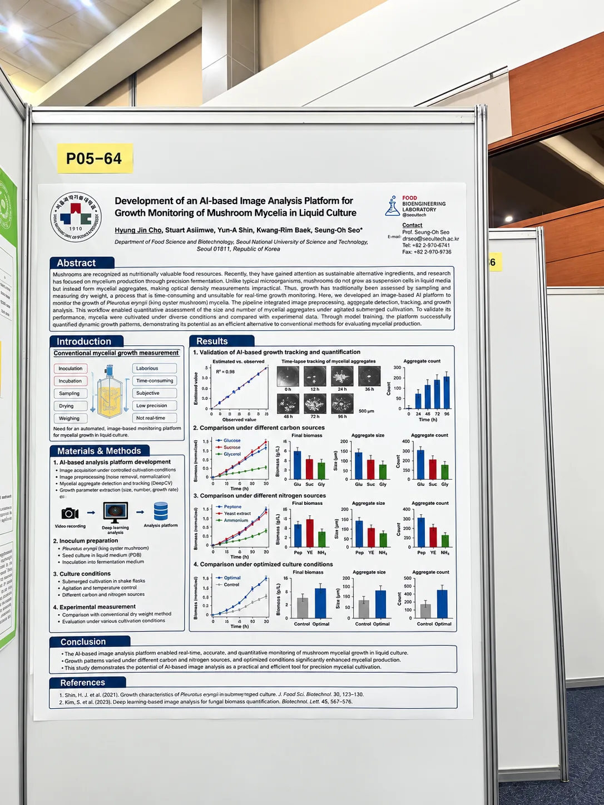
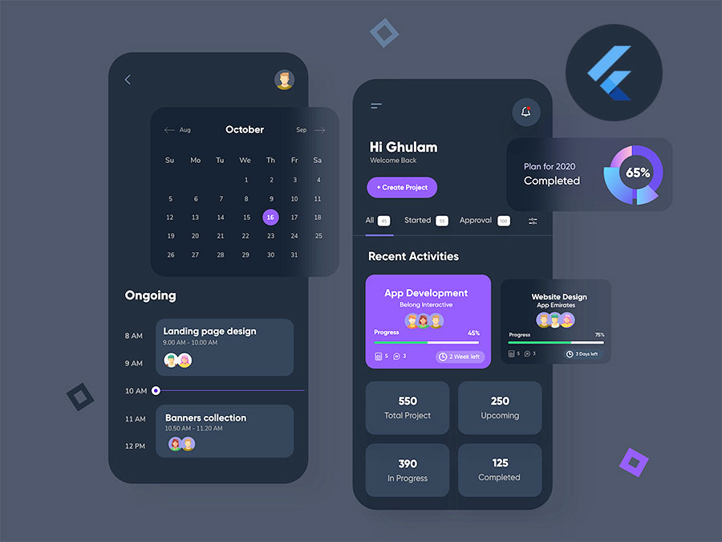
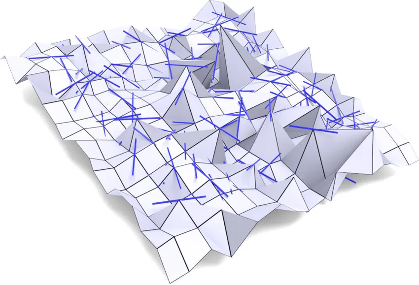

Reconstructing historical XFS filesystems
An ongoing study of read only, provenance preserving recovery of historical inode, namespace, extent, and payload evidence from reformatted XFS volumes.
Read the research
I’m a software engineer working across DevOps and applied AI, based in
Seoul.
I build computer vision systems, machine learning tools, and
production software that take AI models from experiments and integrate
them into reliable operational workflows.



An ongoing study of read only, provenance preserving recovery of historical inode, namespace, extent, and payload evidence from reformatted XFS volumes.
Read the researchA Python parser for reading HWPX documents into typed objects and converting them to JSON, Markdown, or plain text for search, RAG, and backend systems.
A Python toolkit for tracking machine learning experiments, metrics, parameters, and artifacts without adding a heavyweight platform.
A SHAP-guided method for identifying relevant, non-redundant features and improving ensemble malware classification while preserving model transparency.
Read the research